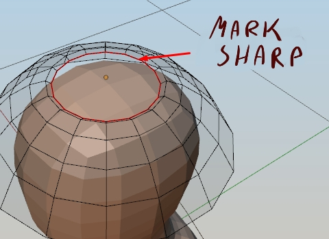
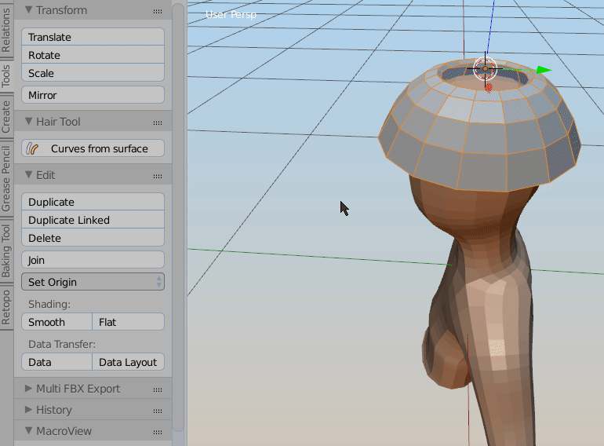
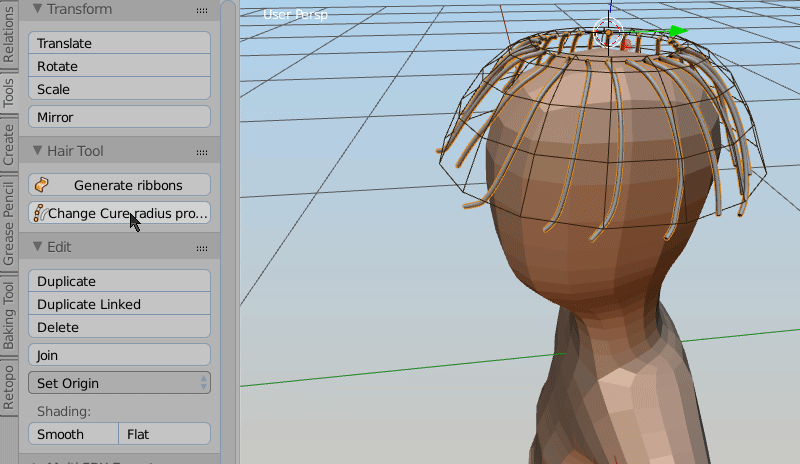

Basic workflow for generating curves from mesh surface¶
Preparing source surface mesh¶

First step is to generate base shape of hair. For that use grid mesh, created only of quads. Mark one border of this mesh with sharp edges - those will become roots of hair splines:
Generating curves from grid surface¶

Press 'Curves from surface' button located in left Tool Shelf -> Tools, to generate curves from selected object. Generated curve settings can be modified using 'F6' hotkey. You can adjust stuff like hair amount, length, add some noise etc. Or you can do some manual tweaking here going into curve 'Edit mode'.
Adding bevel profile to curve¶

To add ribbons profile to generated curves, press 'Generate Ribbons' button. There are some settings to play with under 'F6' hotkey. Use 'Align tilt' to align curves rotation to source mesh (head)
UV¶

You can now uv map curve ribbons by going into UV editor and search for ‘Hair UV’ operator under spacebar. Left click and draw rectangular shape, in uv Editor, to define the uv bounds for hair strands. If you assign material to curve ribbons, use 'Curve Ribbons UV refresh' to update material uv mapping. You can convert curve hair to mesh ribbons by using 'Curve ribbons to mesh ribbons' - now they can be exported to game engine. Any time you want, you can go back to curve ribbons by using 'Mesh ribbons to Curve ribbons'.